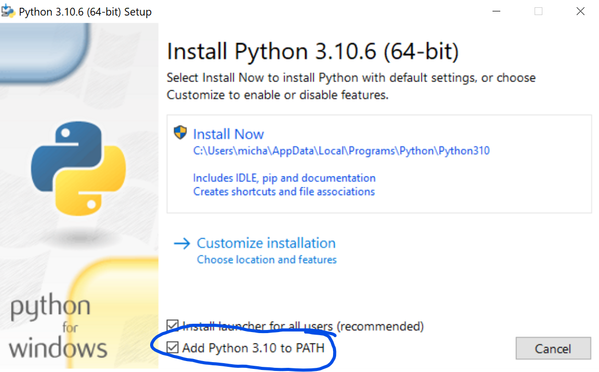
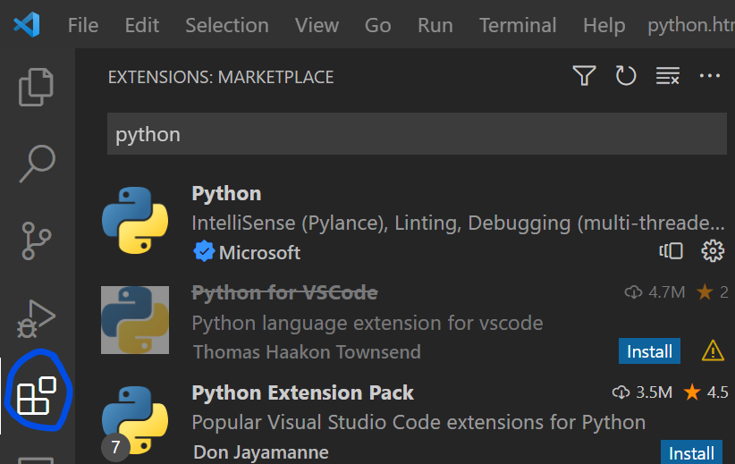

Python is our programming language of choice for AI.
If you haven't come across it yet, you will in your later classes but it's good to get a head start now.
The first step is to install python, make sure you don't use the version from the windows store, it only causes problems.
Make sure when you open the installer to check the "Add Python 3.x to PATH" box, and then click "Install Now"

You can go here for the latest python download.
After installing you'll also want to hit the "Disable path length limit" button if it is shown.
In your classes they might tell you to use PyCharm, but our tool of choice (outside of jupyterlab for Rosie) is VS Code.
You can go here for the latest VS Code download.
After downloading, you'll want to install at least the two extensions Python and Jupyter.
You can find them by opening the extensions tab on the left sidebar and they should be under the "Popular" submenu, or you can search for them.

We'll be seeing python in two types of files, the first have the .py extension, and the second has the .ipynb extension.
The .py files are normal python files where you can just hit run and they'll run through.
The .ipynb files are called jupyter notebooks, they allow you to run small sections of code one at a time and are good for data science research and workshops.
We will mostly be using the later in AI club.
To get started learning python, go ahead and open this notebook in VS Code!